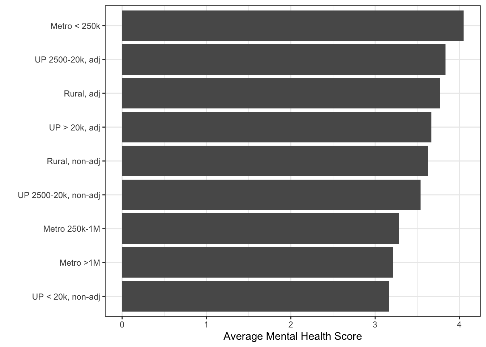

Chapter 1 Visualizing
The goal of this case study is to start making graphs that help us understand our data better. We will be using the ggplot2 package and perhaps some add-ons for making graphs. This is but one of a few different graphical systems in R. The main ones are:
base- the base graphics available in R. They are great for quick plots, but for publication-quality plots, we can do better.lattice- based on the Trellis graphics system developed at Bell Labs in the 1990s to implement many of the theoretical ideas discussed by William Cleveland. In R, it is based on thegridpackage, though we usually don’t interact directly with the functions ingrid.
ggplot2- is also based ongrid, but is intended to implement Wilkinson’s vision in The Grammar of Graphics of model-based graphical displays.
Our first exercise would be to generate some visual insights on the COVID-19 pandemic in Colorado. We’re going to walk through all of the steps that we would use from reading in the data, to managing it to making plots. The first thing we want to do is read in some baseline demographic data. I’ve already got these coded in R.
We can see what variables are there:
| No | Variable | Label | Stats / Values | Freqs (% of Valid) | Graph | Valid | Missing |
|---|---|---|---|---|---|---|---|
| 1 | fips [character] |
FIPS code | 1. 08001 2. 08003 3. 08005 4. 08007 5. 08009 6. 08011 7. 08013 8. 08014 9. 08015 10. 08017 [ 54 others ] |
1 ( 1.6%) 1 ( 1.6%) 1 ( 1.6%) 1 ( 1.6%) 1 ( 1.6%) 1 ( 1.6%) 1 ( 1.6%) 1 ( 1.6%) 1 ( 1.6%) 1 ( 1.6%) 54 (84.4%) |
IIIIIIIIIIIIIIII |
64 (100.0%) |
0 (0.0%) |
| 2 | county [character] |
County name | 1. Adams 2. Alamosa 3. Arapahoe 4. Archuleta 5. Baca 6. Bent 7. Boulder 8. Broomfield 9. Chaffee 10. Cheyenne [ 54 others ] |
1 ( 1.6%) 1 ( 1.6%) 1 ( 1.6%) 1 ( 1.6%) 1 ( 1.6%) 1 ( 1.6%) 1 ( 1.6%) 1 ( 1.6%) 1 ( 1.6%) 1 ( 1.6%) 54 (84.4%) |
IIIIIIIIIIIIIIII |
64 (100.0%) |
0 (0.0%) |
| 3 | st [character] |
State abbreviation | 1. CO | 64 (100.0%) | IIIIIIIIIIIIIIIIIIII | 64 (100.0%) |
0 (0.0%) |
| 4 | hospitals [integer] |
# Hospitals in the county | Mean (sd) : 1.2 (1.3) min < med < max: 0 < 1 < 6 IQR (CV) : 1.2 (1) |
0 : 17 (26.6%) 1 : 31 (48.4%) 2 : 7 (10.9%) 3 : 5 ( 7.8%) 4 : 1 ( 1.6%) 5 : 2 ( 3.1%) 6 : 1 ( 1.6%) |
IIIII IIIIIIIII II I |
64 (100.0%) |
0 (0.0%) |
| 5 | icu_beds [integer] |
# ICU beds in the county | Mean (sd) : 25 (74.1) min < med < max: 0 < 0 < 506 IQR (CV) : 6.5 (3) |
20 distinct values | : : : : : |
64 (100.0%) |
0 (0.0%) |
| 6 | tpop [numeric] |
Total population (2009 ACS) | Mean (sd) : 177986.4 (362030.9) min < med < max: 1524 < 30028 < 1432984 IQR (CV) : 75579.5 (2) |
64 distinct values | : : : : : . |
64 (100.0%) |
0 (0.0%) |
| 7 | mpop [numeric] |
Male Population (2009 ACS) | Mean (sd) : 0.5 (0) min < med < max: 0.5 < 0.5 < 0.7 IQR (CV) : 0 (0.1) |
64 distinct values | : : : : : : : . |
64 (100.0%) |
0 (0.0%) |
| 8 | fpop [numeric] |
Female Population (2009 ACS) | Mean (sd) : 0.5 (0) min < med < max: 0.3 < 0.5 < 0.5 IQR (CV) : 0 (0.1) |
64 distinct values | : : : : : . : : |
64 (100.0%) |
0 (0.0%) |
| 9 | white_male [numeric] |
White male proportion | Mean (sd) : 0.5 (0) min < med < max: 0.4 < 0.5 < 0.6 IQR (CV) : 0 (0.1) |
64 distinct values | : : : : . : : : |
64 (100.0%) |
0 (0.0%) |
| 10 | white_female [numeric] |
White female proportion | Mean (sd) : 0.4 (0) min < med < max: 0.2 < 0.5 < 0.5 IQR (CV) : 0 (0.1) |
64 distinct values | : . : : : : : . : : |
64 (100.0%) |
0 (0.0%) |
| 11 | white_pop [numeric] |
White population proportion | Mean (sd) : 0.9 (0) min < med < max: 0.8 < 0.9 < 1 IQR (CV) : 0 (0) |
64 distinct values | : : : : : . : : : |
64 (100.0%) |
0 (0.0%) |
| 12 | black_male [numeric] |
Black male proportion | Mean (sd) : 0 (0) min < med < max: 0 < 0 < 0.1 IQR (CV) : 0 (1.4) |
64 distinct values | : : : : : . . |
64 (100.0%) |
0 (0.0%) |
| 13 | black_female [numeric] |
Black female proportion | Mean (sd) : 0 (0) min < med < max: 0 < 0 < 0.1 IQR (CV) : 0 (1.5) |
62 distinct values | : : : : : . |
64 (100.0%) |
0 (0.0%) |
| 14 | black_pop [numeric] |
Black population proportion | Mean (sd) : 0 (0) min < med < max: 0 < 0 < 0.1 IQR (CV) : 0 (1.2) |
64 distinct values | : : : : : : |
64 (100.0%) |
0 (0.0%) |
| 15 | hisp_male [numeric] |
Hispanic male proportion | Mean (sd) : 0.1 (0.1) min < med < max: 0 < 0.1 < 0.3 IQR (CV) : 0.1 (0.7) |
64 distinct values | : : . : : : . . : : : : : |
64 (100.0%) |
0 (0.0%) |
| 16 | hisp_female [numeric] |
Hispanic female proportion | Mean (sd) : 0.1 (0.1) min < med < max: 0 < 0.1 < 0.3 IQR (CV) : 0.1 (0.7) |
64 distinct values | : : : : : : : : . . : : : : : . |
64 (100.0%) |
0 (0.0%) |
| 17 | hisp_pop [numeric] |
Hispanic population proportion | Mean (sd) : 0.2 (0.1) min < med < max: 0.1 < 0.1 < 0.6 IQR (CV) : 0.2 (0.7) |
64 distinct values | : : : : : : . . : : : : : |
64 (100.0%) |
0 (0.0%) |
| 18 | over60_pop [numeric] |
Over 60 population proportion | Mean (sd) : 0.6 (0) min < med < max: 0.6 < 0.6 < 0.7 IQR (CV) : 0 (0) |
64 distinct values | : . : : : : : : : : : . : : : : : : |
64 (100.0%) |
0 (0.0%) |
| 19 | over60_male [numeric] |
Over 60 male proportion | Mean (sd) : 0.3 (0) min < med < max: 0.3 < 0.3 < 0.5 IQR (CV) : 0 (0.1) |
64 distinct values | : . : : : : : : : : . |
64 (100.0%) |
0 (0.0%) |
| 20 | over60_female [numeric] |
Over 60 female proportion | Mean (sd) : 0.3 (0) min < med < max: 0.2 < 0.3 < 0.3 IQR (CV) : 0 (0.1) |
64 distinct values | : : : : : : . : : : |
64 (100.0%) |
0 (0.0%) |
| 21 | lt25k [numeric] |
Proportion making less than $25,000/year | Mean (sd) : 0.2 (0.1) min < med < max: 0.1 < 0.3 < 0.5 IQR (CV) : 0.1 (0.4) |
64 distinct values | : : . : : : : : : : : : : : : : : : : : : : : : : : : . |
64 (100.0%) |
0 (0.0%) |
| 22 | gt100k [numeric] |
Proportion making more than $100,000/year | Mean (sd) : 0.2 (0.1) min < med < max: 0 < 0.1 < 0.5 IQR (CV) : 0.1 (0.6) |
64 distinct values | : : . : : : . : : : : : : : . : |
64 (100.0%) |
0 (0.0%) |
| 23 | nohs [numeric] |
Proportion without a high school degree | Mean (sd) : 0.1 (0.1) min < med < max: 0 < 0.1 < 0.3 IQR (CV) : 0.1 (0.5) |
64 distinct values | . : : : . : : : : : : : : : : : : |
64 (100.0%) |
0 (0.0%) |
| 24 | BAplus [numeric] |
Proportion with a BA/S degree or greater | Mean (sd) : 0.3 (0.1) min < med < max: 0.1 < 0.2 < 0.6 IQR (CV) : 0.2 (0.4) |
64 distinct values | : : : : : : : : . : . : : : : : : : : . . |
64 (100.0%) |
0 (0.0%) |
| 25 | repvote [numeric] |
Republican share of two-party vote in 2020 | Mean (sd) : 0.6 (0.2) min < med < max: 0.2 < 0.6 < 0.9 IQR (CV) : 0.3 (0.3) |
64 distinct values | : . : . : . : : : : : . . : : : : : : : : : : : : |
64 (100.0%) |
0 (0.0%) |
| 26 | urban_rural [factor] |
Census Urban-rural classification | 1. Metro >1M 2. Metro 250k-1M 3. Metro < 250k 4. UP > 20k, adj 5. UP < 20k, non-adj 6. UP 2500-20k, adj 7. UP 2500-20k, non-adj 8. Rural, adj 9. Rural, non-adj |
10 (15.6%) 5 ( 7.8%) 2 ( 3.1%) 3 ( 4.7%) 3 ( 4.7%) 6 ( 9.4%) 15 (23.4%) 3 ( 4.7%) 17 (26.6%) |
III I I IIII IIIII |
64 (100.0%) |
0 (0.0%) |
| 27 | tot_pop [integer] |
Total Poulation (Colorado Estimate) | Mean (sd) : 90062.1 (183363.4) min < med < max: 726 < 15105.5 < 729239 IQR (CV) : 38011.5 (2) |
64 distinct values | : : : : : . |
64 (100.0%) |
0 (0.0%) |
| 28 | full_vac_pop [integer] |
Number of fully vaccinated people | Mean (sd) : 46407.9 (98270) min < med < max: 420 < 6631 < 437037 IQR (CV) : 15386.2 (2.1) |
64 distinct values | : : : : : |
64 (100.0%) |
0 (0.0%) |
| 29 | pct_vac_pop [numeric] |
Proportion of total population that is fully vaccinated | Mean (sd) : 44.6 (13.6) min < med < max: 16.4 < 42.9 < 78.2 IQR (CV) : 19.5 (0.3) |
63 distinct values | . : : : . . : : : . : : : : : . : : : : : . |
64 (100.0%) |
0 (0.0%) |
| 30 | eligible_pop [integer] |
Number of people eligible for the vaccine (12+) | Mean (sd) : 77351.3 (156889.4) min < med < max: 661 < 13084 < 632816 IQR (CV) : 33153.2 (2) |
64 distinct values | : : : : : |
64 (100.0%) |
0 (0.0%) |
| 31 | full_vac_eligible [integer] |
Number of eligible people vaccinated | Mean (sd) : 46407.1 (98268.6) min < med < max: 420 < 6631 < 437030 IQR (CV) : 15386 (2.1) |
64 distinct values | : : : : : |
64 (100.0%) |
0 (0.0%) |
| 32 | pct_vac_eligible [numeric] |
Proportion of eligible population that is fully vaccinated | Mean (sd) : 51.2 (15.1) min < med < max: 17.9 < 49.5 < 85.9 IQR (CV) : 23 (0.3) |
62 distinct values | : . : : : : : . : : : : : . : : : : : : . |
64 (100.0%) |
0 (0.0%) |
| 33 | adult_pop [integer] |
Adult population (18+) | Mean (sd) : 70368.8 (142887.8) min < med < max: 613 < 11890.5 < 590056 IQR (CV) : 30172.8 (2) |
64 distinct values | : : : : : . . |
64 (100.0%) |
0 (0.0%) |
| 34 | full_vac_adult [integer] |
Number of adults who are fully vaccinated | Mean (sd) : 43782 (92506) min < med < max: 412 < 6469.5 < 415992 IQR (CV) : 14743.2 (2.1) |
64 distinct values | : : : : : . |
64 (100.0%) |
0 (0.0%) |
| 35 | pct_vac_adult [numeric] |
Proportion of adults who are fullyvaccinated | Mean (sd) : 53.8 (14.9) min < med < max: 18.4 < 53.1 < 88.6 IQR (CV) : 21.6 (0.3) |
61 distinct values | : : . : : . : : : : . : : : : : . . : : : : : : |
64 (100.0%) |
0 (0.0%) |
| 36 | over65_pop [integer] |
Number of people over the age of 65 | Mean (sd) : 13230.7 (24794.9) min < med < max: 199 < 2681 < 99332 IQR (CV) : 7059.2 (1.9) |
64 distinct values | : : : : : . . |
64 (100.0%) |
0 (0.0%) |
| 37 | full_vac_over65 [integer] |
Number of people over 65 who are fully vaccinated | Mean (sd) : 10693.3 (20642.6) min < med < max: 142 < 1975.5 < 85755 IQR (CV) : 5349 (1.9) |
64 distinct values | : : : : : . . |
64 (100.0%) |
0 (0.0%) |
| 38 | pct_vac_over65 [numeric] |
Proportion of those over 65 who are fully vaccinated | Mean (sd) : 71.7 (11.9) min < med < max: 34.8 < 70.8 < 93.9 IQR (CV) : 15.4 (0.2) |
59 distinct values | : : . : : . : : : : : : : : |
64 (100.0%) |
0 (0.0%) |
| 39 | phys_health [numeric] |
Average number of physically unhealthy days out of the last 30 (2016) | Mean (sd) : 3.4 (0.5) min < med < max: 2.5 < 3.3 < 4.8 IQR (CV) : 0.7 (0.1) |
20 distinct values | : . : : : : : : : : : : . |
64 (100.0%) |
0 (0.0%) |
| 40 | mental_health [numeric] |
Average number of mentally unhealthy days out of the last 30 (2016) | Mean (sd) : 3.5 (0.3) min < med < max: 2.9 < 3.5 < 4.4 IQR (CV) : 0.4 (0.1) |
15 distinct values | . : : : : : : . : : : : . . : : : : : : . |
64 (100.0%) |
0 (0.0%) |
| 41 | smoking_pct [numeric] |
Percentage of adults who currently smoke (2016) | Mean (sd) : 0.1 (0) min < med < max: 0.1 < 0.1 < 0.2 IQR (CV) : 0 (0.1) |
12 distinct values | : : : : : : : : : : : : . |
64 (100.0%) |
0 (0.0%) |
| 42 | inactivity [numeric] |
Percentage of adults over 20 reporting no leisure-time physical acticity (2016) | Mean (sd) : 0.2 (0) min < med < max: 0.1 < 0.2 < 0.3 IQR (CV) : 0.1 (0.2) |
16 distinct values | : : . : . : : : : : : : . : : : : : : : . |
64 (100.0%) |
0 (0.0%) |
| 43 | wkly_wage [numeric] |
Average Weekly Wage | Mean (sd) : 894.1 (219.3) min < med < max: 548 < 832 < 1606 IQR (CV) : 216.2 (0.2) |
64 distinct values | : : : : : : : . . : : : . . |
64 (100.0%) |
0 (0.0%) |
| 44 | rich_poor [factor] |
1. < $750 2. $750 - $1000 3. < $1000 |
14 (21.9%) 35 (54.7%) 15 (23.4%) |
IIII IIIIIIIIII IIII |
64 (100.0%) |
0 (0.0%) |
We could then look at the structure of the data:
## 'data.frame': 64 obs. of 44 variables:
## $ fips : chr "08109" "08115" "08017" "08027" ...
## ..- attr(*, "label")= chr "FIPS code"
## $ county : chr "Saguache" "Sedgwick" "Cheyenne" "Custer" ...
## ..- attr(*, "label")= chr "County name"
## $ st : chr "CO" "CO" "CO" "CO" ...
## ..- attr(*, "label")= chr "State abbreviation"
## $ hospitals : int 0 1 1 0 2 0 1 0 1 1 ...
## ..- attr(*, "label")= chr "# Hospitals in the county"
## $ icu_beds : int 0 0 0 0 11 0 4 0 6 0 ...
## ..- attr(*, "label")= chr "# ICU beds in the county"
## $ tpop : num 13686 4606 3752 9908 112620 ...
## ..- attr(*, "label")= chr "Total population (2009 ACS)"
## $ mpop : num 0.501 0.494 0.509 0.516 0.505 ...
## ..- attr(*, "label")= chr "Male Population (2009 ACS)"
## $ fpop : num 0.499 0.506 0.491 0.484 0.495 ...
## ..- attr(*, "label")= chr "Female Population (2009 ACS)"
## $ white_male : num 0.456 0.458 0.481 0.484 0.448 ...
## ..- attr(*, "label")= chr "White male proportion"
## $ white_female : num 0.458 0.482 0.472 0.461 0.436 ...
## ..- attr(*, "label")= chr "White female proportion"
## $ white_pop : num 0.914 0.94 0.954 0.945 0.884 ...
## ..- attr(*, "label")= chr "White population proportion"
## $ black_male : num 0.00658 0.00782 0.0032 0.01171 0.00387 ...
## ..- attr(*, "label")= chr "Black male proportion"
## $ black_female : num 0.00453 0.00174 0.00586 0.00323 0.00224 ...
## ..- attr(*, "label")= chr "Black female proportion"
## $ black_pop : num 0.01111 0.00955 0.00906 0.01494 0.00611 ...
## ..- attr(*, "label")= chr "Black population proportion"
## $ hisp_male : num 0.1723 0.0816 0.0672 0.0317 0.0655 ...
## ..- attr(*, "label")= chr "Hispanic male proportion"
## $ hisp_female : num 0.1868 0.0851 0.0496 0.0234 0.0642 ...
## ..- attr(*, "label")= chr "Hispanic female proportion"
## $ hisp_pop : num 0.3591 0.1667 0.1167 0.0551 0.1297 ...
## ..- attr(*, "label")= chr "Hispanic population proportion"
## $ over60_pop : num 0.623 0.618 0.633 0.601 0.638 ...
## ..- attr(*, "label")= chr "Over 60 population proportion"
## $ over60_male : num 0.311 0.306 0.324 0.311 0.323 ...
## ..- attr(*, "label")= chr "Over 60 male proportion"
## $ over60_female : num 0.312 0.313 0.309 0.29 0.315 ...
## ..- attr(*, "label")= chr "Over 60 female proportion"
## $ lt25k : num 0.403 0.312 0.249 0.291 0.197 ...
## ..- attr(*, "label")= chr "Proportion making less than $25,000/year"
## $ gt100k : num 0.0954 0.0829 0.0968 0.0835 0.2053 ...
## ..- attr(*, "label")= chr "Proportion making more than $100,000/year"
## $ nohs : num 0.2687 0.1865 0.1203 0.0611 0.0655 ...
## ..- attr(*, "label")= chr "Proportion without a high school degree"
## $ BAplus : num 0.19 0.138 0.207 0.296 0.416 ...
## ..- attr(*, "label")= chr "Proportion with a BA/S degree or greater"
## $ repvote : num 0.447 0.792 0.875 0.721 0.448 ...
## ..- attr(*, "label")= chr "Republican share of two-party vote in 2020"
## $ urban_rural : Factor w/ 9 levels "Metro >1M","Metro 250k-1M",..: 9 9 9 8 4 9 7 1 7 7 ...
## ..- attr(*, "label")= chr "Census Urban-rural classification"
## $ tot_pop : int 6824 2229 1825 5059 56272 726 17756 18844 16181 12122 ...
## ..- attr(*, "label")= chr "Total Poulation (Colorado Estimate)"
## $ full_vac_pop : int 2371 897 420 1974 31638 568 10721 7586 6987 3723 ...
## ..- attr(*, "label")= chr "Number of fully vaccinated people"
## $ pct_vac_pop : num 34.7 40.2 23 39 56.2 78.2 60.4 40.3 43.2 30.7 ...
## ..- attr(*, "label")= chr "Proportion of total population that is fully vaccinated"
## $ eligible_pop : int 5852 1948 1533 4612 49629 661 16204 16857 13454 10024 ...
## ..- attr(*, "label")= chr "Number of people eligible for the vaccine (12+)"
## $ full_vac_eligible: int 2371 897 420 1974 31635 568 10719 7586 6987 3723 ...
## ..- attr(*, "label")= chr "Number of eligible people vaccinated"
## $ pct_vac_eligible : num 40.5 46 27.4 42.8 63.7 85.9 66.2 45 51.9 37.1 ...
## ..- attr(*, "label")= chr "Proportion of eligible population that is fully vaccinated"
## $ adult_pop : int 5311 1797 1382 4330 45313 613 15249 15624 12058 8924 ...
## ..- attr(*, "label")= chr "Adult population (18+)"
## $ full_vac_adult : int 2316 893 419 1961 30042 543 10189 7350 6617 3611 ...
## ..- attr(*, "label")= chr "Number of adults who are fully vaccinated"
## $ pct_vac_adult : num 43.6 49.7 30.3 45.3 66.3 88.6 66.8 47 54.9 40.5 ...
## ..- attr(*, "label")= chr "Proportion of adults who are fullyvaccinated"
## $ over65_pop : int 1664 613 381 1648 10210 199 3720 4061 2367 2165 ...
## ..- attr(*, "label")= chr "Number of people over the age of 65"
## $ full_vac_over65 : int 847 474 204 1114 8790 142 1950 2519 1915 1405 ...
## ..- attr(*, "label")= chr "Number of people over 65 who are fully vaccinated"
## $ pct_vac_over65 : num 50.9 77.3 53.5 67.6 86.1 71.4 52.4 62 80.9 64.9 ...
## ..- attr(*, "label")= chr "Proportion of those over 65 who are fully vaccinated"
## $ phys_health : num 4.5 3.3 3.1 3.4 3.1 3.3 3 2.8 4.1 3.7 ...
## ..- attr(*, "label")= chr "Average number of physically unhealthy days out of the last 30 (2016)"
## $ mental_health : num 4.2 3.5 3.4 3.7 3.6 3.4 3.1 3.2 4.1 3.8 ...
## ..- attr(*, "label")= chr "Average number of mentally unhealthy days out of the last 30 (2016)"
## $ smoking_pct : num 0.18 0.15 0.14 0.15 0.13 0.16 0.13 0.15 0.17 0.17 ...
## ..- attr(*, "label")= chr "Percentage of adults who currently smoke (2016)"
## $ inactivity : num 0.17 0.2 0.26 0.2 0.13 0.18 0.1 0.16 0.17 0.22 ...
## ..- attr(*, "label")= chr "Percentage of adults over 20 reporting no leisure-time physical acticity (2016)"
## $ wkly_wage : num 711 758 903 679 848 ...
## ..- attr(*, "label")= chr "Average Weekly Wage"
## $ rich_poor : Factor w/ 3 levels "< $750","$750 - $1000",..: 1 2 2 1 2 1 3 2 2 1 ...Next, we can download the most recent COVID-19 case data:
library(rio)
f <- "https://raw.githubusercontent.com/nytimes/covid-19-data/master/us-counties.csv"
covid <- import(f)The data we downloaded has all of the counties across the US, so we’ll need to learn about how to subset and filter data. To this, we turn to the tidyverse.
1.1 Wrangling data
We’re going to use the dplyr package, which is part of the tidyverse, for wrangling data. There are tons of different ways to filter, subset, select, sample, etc… data, but the tidyverse functions are generally pretty intuitive (after a brief introduction) and simple. We can do lots of things with dplyr, but the most common operations could be boiled down to the following:
mutate()adds new variables that are functions of existing variablesselect()picks variables based on their names.filter()picks cases based on their values.arrange()changes the ordering of the rows.summarise()reduces multiple values down to a single summary.reframe()is a new verb that is like summarise, but doesn’t expect a single observation per group.
There is also a group_by() operator that allows the operations to be done for groups of observations rather than the entire data frame. Here is a useful cheat sheet for the dplyr functions.
These functions are often combined with the pipe character, %>%. The pipe character operates by taking whatever is on its left side and sending it to the function on its right. The tidyverse functions are all configured so that they expect the first argument to be the piped data. However, you could put the piped output anywhere in the function as the period (.) stands in for the piped output. We’ll see some examples of this later on.
A function that uses the pipe character usually starts by piping the original data into one of the dplyr verbs. For example, we could filter the covid data to only contain those from Colorado from the most recent date. To do this, we could 1) group the data by county, 2) arrange by date and 3, take the last observation for each county.
library(dplyr)
covid <- covid %>%
filter(state == "Colorado")
covid_last <- covid %>%
group_by(county) %>%
arrange(date, .by_group = TRUE) %>%
reframe(deaths = last(deaths),
cases = last(cases))1.1.1 Merging Datasets
Next, we could go ahead and put our two datasets together. The left_join() function will keep all of the rows of the first argument and only the matching elements of the second dataset. right_join() does the opposite. There are also full_join() which keeps all elements of both datasets and inner_join() which keeps on the elements present in both datasets. By default, the *_join() functions will join the data based on all common columns across both datasets. You can change this behaviour by using join = join_by(left_var == right_var) where left_var is the name of the variable to join by the dataset on the left side of the join and right_var is the same for the right-side dataset.
Just by way of information, there are also some filter-join functions in the dplyr package. semi_join() returns the rows of its first argument that exist in its second argument and anti_join() returns the rows of its first argument that do not exist in its second argument.
## county hospitals icu_beds tpop mpop fpop white_male white_female white_pop
## 1 Saguache 0 0 13686 0.5006576 0.4993424 0.4559404 0.4579863 0.9139266
## 2 Sedgwick 1 0 4606 0.4937039 0.5062961 0.4580981 0.4815458 0.9396439
## 3 Cheyenne 1 0 3752 0.5085288 0.4914712 0.4813433 0.4722814 0.9536247
## 4 Custer 0 0 9908 0.5157449 0.4842551 0.4840533 0.4606379 0.9446912
## 5 La Plata 2 11 112620 0.5045463 0.4954537 0.4476647 0.4362280 0.8838927
## 6 San Juan 0 0 1524 0.5603675 0.4396325 0.5301837 0.4212598 0.9514436
## 7 Pitkin 1 4 35900 0.5174930 0.4825070 0.4932033 0.4562674 0.9494708
## 8 Park 0 0 37112 0.5264066 0.4735934 0.4965510 0.4454624 0.9420134
## 9 Alamosa 1 6 33366 0.5011689 0.4988311 0.4345741 0.4381107 0.8726848
## 10 Prowers 1 0 24328 0.5025485 0.4974515 0.4754193 0.4711444 0.9465636
## 11 Moffat 1 0 26376 0.5128147 0.4871853 0.4848347 0.4606460 0.9454807
## 12 Jefferson 4 94 1160466 0.4985825 0.5014175 0.4570164 0.4599962 0.9170126
## 13 Summit 1 8 62014 0.5423292 0.4576708 0.5141420 0.4362241 0.9503660
## 14 Pueblo 2 32 335058 0.4927863 0.5072137 0.4424249 0.4591623 0.9015872
## 15 Boulder 5 72 652156 0.5031588 0.4968412 0.4543698 0.4475923 0.9019621
## 16 Denver 6 227 1432984 0.5018758 0.4981242 0.4081748 0.3997951 0.8079699
## 17 Montrose 1 8 84428 0.4930829 0.5069171 0.4632113 0.4796039 0.9428152
## 18 Eagle 1 5 109986 0.5302493 0.4697507 0.4986271 0.4453112 0.9439383
## 19 San Miguel 0 0 16382 0.5321695 0.4678305 0.5081187 0.4430472 0.9511659
## 20 Costilla 0 0 7656 0.5177638 0.4822362 0.4566353 0.4250261 0.8816614
## 21 Broomfield 1 20 138534 0.4972209 0.5027791 0.4384339 0.4416389 0.8800728
## 22 Chaffee 1 2 40054 0.5283867 0.4716133 0.4901882 0.4492935 0.9394817
## black_male black_female black_pop hisp_male hisp_female hisp_pop over60_pop over60_male
## 1 0.0065761 0.0045302 0.0111062 0.1722929 0.1867602 0.3590530 0.6232647 0.3108709
## 2 0.0078159 0.0017369 0.0095528 0.0816327 0.0851064 0.1667390 0.6183811 0.3057225
## 3 0.0031983 0.0058635 0.0090618 0.0671642 0.0495736 0.1167377 0.6333464 0.3241780
## 4 0.0117077 0.0032297 0.0149374 0.0316916 0.0234154 0.0551070 0.6012898 0.3110830
## 5 0.0038714 0.0022376 0.0061090 0.0654591 0.0641982 0.1296573 0.6378880 0.3226304
## 6 0.0013123 0.0000000 0.0013123 0.0708661 0.0524934 0.1233596 0.6213565 0.3500483
## 7 0.0075766 0.0028969 0.0104735 0.0495822 0.0517549 0.1013370 0.6335860 0.3271969
## 8 0.0045807 0.0040957 0.0086764 0.0334124 0.0288855 0.0622979 0.6249745 0.3294877
## 9 0.0121081 0.0090511 0.0211593 0.2303543 0.2277168 0.4580711 0.6496055 0.3265410
## 10 0.0054258 0.0034528 0.0088787 0.2033870 0.1830812 0.3864683 0.6395511 0.3230867
## 11 0.0045496 0.0032605 0.0078101 0.0846982 0.0718077 0.1565059 0.6426835 0.3303122
## 12 0.0081347 0.0059511 0.0140857 0.0765606 0.0783582 0.1549188 0.6411245 0.3212147
## 13 0.0086110 0.0040958 0.0127068 0.0773374 0.0684362 0.1457735 0.6462361 0.3510404
## 14 0.0144035 0.0114070 0.0258105 0.2140883 0.2168162 0.4309045 0.6376744 0.3158653
## 15 0.0067499 0.0049651 0.0117150 0.0703758 0.0687627 0.1391385 0.6466982 0.3268295
## 16 0.0494772 0.0487849 0.0982621 0.1502808 0.1463896 0.2966704 0.6537768 0.3296953
## 17 0.0042166 0.0030559 0.0072725 0.1070261 0.1000379 0.2070640 0.6267402 0.3102388
## 18 0.0111287 0.0044915 0.0156202 0.1557471 0.1424909 0.2982380 0.6515174 0.3457555
## 19 0.0054938 0.0031742 0.0086681 0.0554267 0.0515200 0.1069466 0.6430550 0.3415366
## 20 0.0114943 0.0088819 0.0203762 0.3074713 0.2951933 0.6026646 0.6152519 0.3184087
## 21 0.0084745 0.0066698 0.0151443 0.0635945 0.0624540 0.1260485 0.6484918 0.3243828
## 22 0.0158286 0.0015479 0.0173765 0.0636141 0.0376492 0.1012633 0.6210195 0.3309992
## over60_female lt25k gt100k nohs BAplus repvote urban_rural tot_pop
## 1 0.3123938 0.4033045 0.0953811 0.2687361 0.1895787 0.4473479 Rural, non-adj 6824
## 2 0.3126585 0.3124336 0.0828905 0.1864989 0.1384439 0.7917317 Rural, non-adj 2229
## 3 0.3091684 0.2488479 0.0967742 0.1202532 0.2070524 0.8751183 Rural, non-adj 1825
## 4 0.2902067 0.2910489 0.0834706 0.0611050 0.2963776 0.7211337 Rural, adj 5059
## 5 0.3152576 0.1970761 0.2053351 0.0654549 0.4158661 0.4477447 UP > 20k, adj 56272
## 6 0.2713082 0.1392758 0.0724234 0.0448029 0.4516129 0.4479167 Rural, non-adj 726
## 7 0.3063891 0.1525447 0.3312360 0.0445772 0.5906691 0.2580188 UP 2500-20k, non-adj 17756
## 8 0.2954868 0.1299184 0.2435255 0.0707616 0.3135566 0.6420050 Metro >1M 18844
## 9 0.3230644 0.3761405 0.1177483 0.1626225 0.2659823 0.4885325 UP 2500-20k, non-adj 16181
## 10 0.3164645 0.3589133 0.0656355 0.2092519 0.1704614 0.7485690 UP 2500-20k, non-adj 12122
## 11 0.3123713 0.2124651 0.1397209 0.1152357 0.1471191 0.8585532 UP 2500-20k, non-adj 13252
## 12 0.3199098 0.1543146 0.2831228 0.0742428 0.3843765 0.4622031 Metro >1M 583081
## 13 0.2951957 0.0982958 0.2765267 0.0550049 0.4885633 0.3479566 UP < 20k, non-adj 30983
## 14 0.3218090 0.3143779 0.1142508 0.1504617 0.2097279 0.5027031 Metro < 250k 168110
## 15 0.3198687 0.1930457 0.3150113 0.0663074 0.5663567 0.2382778 Metro 250k-1M 327164
## 16 0.3240815 0.2794546 0.1860275 0.1671625 0.3925907 0.2040418 Metro >1M 729239
## 17 0.3165014 0.2769821 0.1219949 0.1520444 0.2029647 0.7246070 UP > 20k, adj 42765
## 18 0.3057619 0.1315326 0.3073141 0.1262167 0.4696625 0.3893629 UP < 20k, non-adj 55070
## 19 0.3015184 0.1968556 0.2210940 0.0605951 0.4593614 0.2577345 Rural, non-adj 8174
## 20 0.2968432 0.5222052 0.0581930 0.2619849 0.1707317 0.3432574 Rural, non-adj 3872
## 21 0.3241089 0.1079362 0.3522239 0.0456233 0.4193482 0.4213444 Metro >1M 70762
## 22 0.2900203 0.2997847 0.1248654 0.0906938 0.2949720 0.5244674 UP 2500-20k, non-adj 20361
## full_vac_pop pct_vac_pop eligible_pop full_vac_eligible pct_vac_eligible adult_pop
## 1 2371 34.7 5852 2371 40.5 5311
## 2 897 40.2 1948 897 46.0 1797
## 3 420 23.0 1533 420 27.4 1382
## 4 1974 39.0 4612 1974 42.8 4330
## 5 31638 56.2 49629 31635 63.7 45313
## 6 568 78.2 661 568 85.9 613
## 7 10721 60.4 16204 10719 66.2 15249
## 8 7586 40.3 16857 7586 45.0 15624
## 9 6987 43.2 13454 6987 51.9 12058
## 10 3723 30.7 10024 3723 37.1 8924
## 11 3968 29.9 11081 3968 35.8 9851
## 12 348157 59.7 508992 348149 68.4 467388
## 13 21528 69.5 28057 21527 76.7 26562
## 14 70396 41.9 144823 70395 48.6 131053
## 15 212447 64.9 289956 212443 73.3 265779
## 16 437037 59.9 632816 437030 69.1 590056
## 17 15778 36.9 37085 15778 42.5 33523
## 18 35477 64.4 47782 35476 74.2 43715
## 19 5523 67.6 7120 5523 77.6 6503
## 20 1935 50.0 3406 1935 56.8 3122
## 21 46211 65.3 61262 46211 75.4 55296
## 22 10776 52.9 18234 10775 59.1 17080
## full_vac_adult pct_vac_adult over65_pop full_vac_over65 pct_vac_over65 phys_health mental_health
## 1 2316 43.6 1664 847 50.9 4.5 4.2
## 2 893 49.7 613 474 77.3 3.3 3.5
## 3 419 30.3 381 204 53.5 3.1 3.4
## 4 1961 45.3 1648 1114 67.6 3.4 3.7
## 5 30042 66.3 10210 8790 86.1 3.1 3.6
## 6 543 88.6 199 142 71.4 3.3 3.4
## 7 10189 66.8 3720 1950 52.4 3.0 3.1
## 8 7350 47.0 4061 2519 62.0 2.8 3.2
## 9 6617 54.9 2367 1915 80.9 4.1 4.1
## 10 3611 40.5 2165 1405 64.9 3.7 3.8
## 11 3909 39.7 2156 1331 61.7 3.4 3.4
## 12 328652 70.3 99332 85755 86.3 2.8 3.2
## 13 20517 77.2 4335 3573 82.4 3.0 3.1
## 14 67385 51.4 32020 24240 75.7 4.6 4.2
## 15 198452 74.7 48807 45826 93.9 2.9 3.1
## 16 415992 70.5 87947 70603 80.3 3.2 3.6
## 17 15403 45.9 10174 7026 69.1 3.6 3.6
## 18 33443 76.5 6869 5983 87.1 2.9 3.1
## 19 5211 80.1 1258 966 76.8 3.0 3.4
## 20 1870 59.9 1069 744 69.6 4.8 4.4
## 21 42634 77.1 10213 9559 93.6 2.8 3.3
## 22 10446 61.2 5391 4206 78.0 3.1 3.6
## smoking_pct inactivity wkly_wage rich_poor deaths cases
## 1 0.18 0.17 711 < $750 12 1203
## 2 0.15 0.20 758 $750 - $1000 11 490
## 3 0.14 0.26 903 $750 - $1000 9 322
## 4 0.15 0.20 679 < $750 21 656
## 5 0.13 0.13 848 $750 - $1000 86 13002
## 6 0.16 0.18 548 < $750 0 203
## 7 0.13 0.10 1149 < $1000 7 6676
## 8 0.15 0.16 830 $750 - $1000 20 2913
## 9 0.17 0.17 783 $750 - $1000 62 4560
## 10 0.17 0.22 693 < $750 51 2654
## 11 0.16 0.21 1000 $750 - $1000 52 3062
## 12 0.13 0.13 1221 < $1000 1356 128067
## 13 0.15 0.10 834 $750 - $1000 14 10087
## 14 0.17 0.22 907 $750 - $1000 802 47690
## 15 0.11 0.10 1418 < $1000 373 68435
## 16 0.16 0.12 1458 < $1000 1360 177033
## 17 0.14 0.16 823 $750 - $1000 160 9398
## 18 0.13 0.11 1015 < $1000 35 16274
## 19 0.15 0.14 899 $750 - $1000 8 2322
## 20 0.19 0.24 648 < $750 18 708
## 21 0.13 0.13 1606 < $1000 116 13997
## 22 0.13 0.17 845 $750 - $1000 47 4749
## [ reached 'max' / getOption("max.print") -- omitted 42 rows ]1.2 GGplot
As mentioned above, we’re using the ggplot package to make plots. There is another nice cheat sheet here. There are a few different aspects of the plot that we can specify.
- Geometries are ways of mapping the data onto aesthetic elements (values, colour, shape, size, etc…) of the data onto the plotting region.
- Themes govern the overall look of the plot including color schemes for the background, axis labels, positioning of the legend, etc…
- Scales govern how the axes behave and the exact ways in which aesthetic elements are represented in the plot.
- Facets allow multiple-panel plots to be constructed.
Let’s say we wanted to make a bar plot such that the height of the bar represented the number of distinct observations we had each day. All of the plots we make will start with the ggplot() function. This initializes the plot with data and often aesthetics. Aesthetic elements that show up in the call to ggplot() are defined for all subsequent geometries. We can also define aesthetic elements to be specific to each geometry if desired. There are times we’ll see later where this might be useful.
1.2.1 Bar Plots
In the plot below, we plot urban_rural (the county’s urban-rural status) as the variable on the \(x\)-axis. Because we are making a bar graph it automatically counts up the number of observations in each group and plots that on the y-axis. If this is the behaviour we want, we do not need to supply a y aesthetic. Then we add (with a + sign) the bar geometry to our initialized plot and we get the following.
We can make the plot a bit “prettier” (to my eye at least) by changing the theme and adding a title.
ggplot(colo_dat, aes(x=urban_rural)) +
geom_bar() +
theme_bw() +
ggtitle("COVID-19 Observations in Colorado Counties by Day") +
labs(x="County Density", y="Number of Observations")We also see that the text labels on the x-axis are overplotting each other. We can solve this in two ways. We could use ccord_flip() at the end to make horizontal rather than vertical bars. Here is what that looks like.
ggplot(colo_dat, aes(x=urban_rural)) +
geom_bar() +
theme_bw() +
ggtitle("COVID-19 Observations in Colorado Counties by Day") +
labs(x="County Density", y="Number of Observations") +
coord_flip()
You Try It!
Now, I want you to try making a bar plot to see how many observations are in each level of the variable rich_poor (a categorical indicator of average weekly wage).
We could also make bar graphs by plotting the mean of some variable by some other variable. For example, we might want to plot the mental health by urban-rural context from the colo data object. Here
ggplot(colo_dat, aes(x=urban_rural, y=mental_health)) +
stat_summary(geom="bar", fun=mean) +
theme_bw() +
labs(x="", y="Average Mental Health Score") +
coord_flip()Now, one last thing that we might want to do would be to order the bars by height. We could do this with the reorder() function - applied to the x aesthetic in the call to ggplot().
ggplot(colo, aes(x=reorder(urban_rural, mental_health, mean),
y=mental_health)) +
stat_summary(geom="bar", fun=mean) +
theme_bw() +
labs(x="", y="Average Mental Health Score") +
coord_flip()
You Try It!
Now you can make a bar plot of average republican vote by urban-rural context. Make sure to sort by height.
If we wanted to see the actual data instead, we could use the summarise() function from the dplyr package.
colo_dat %>%
group_by(urban_rural) %>%
summarise(mean_mh = mean(mental_health)) %>%
arrange(desc(mean_mh))## # A tibble: 9 × 2
## urban_rural mean_mh
## <fct> <dbl>
## 1 Metro < 250k 4.05
## 2 UP 2500-20k, adj 3.83
## 3 Rural, adj 3.77
## 4 UP > 20k, adj 3.67
## 5 Rural, non-adj 3.63
## 6 UP 2500-20k, non-adj 3.54
## 7 Metro 250k-1M 3.28
## 8 Metro >1M 3.21
## 9 UP < 20k, non-adj 3.171.2.2 Line Graphs
Now that our two datasets are together, we could make some more graphs. We could make line-graphs of cases. First, we could show how the total number of cases looks across counties.
ggplot(covid, aes(x=date, y=cases)) +
stat_summary(fun=sum, geom="line") +
theme_bw() +
labs(x="Date", y="Total COVID-19 Cases")Note that cases in the dataset is the number of cases to date - a cumulative sum. If we wanted to figure out how many new cases happened each day, we could subtract the previous day’s total form the current day. We could do this with the lag() function.
library(tidyr)
covid_filled <- covid %>%
complete(county, date) %>%
fill(cases, deaths, .direction = "down") %>%
mutate(cases = ifelse(cases < dplyr::lag(cases), dplyr::lag(cases), cases)) %>%
filter(date >= lubridate::ymd("2021-01-01")) %>%
group_by(county) %>%
arrange(date, .by_group = TRUE) %>%
mutate(new_cases = cases - dplyr::lag(cases))Then, we could plot the sum of new_cases by date.
ggplot(covid_filled, aes(x=date, y=new_cases)) +
stat_summary(fun=sum, geom="line") +
theme_bw() +
labs(x="Date", y="New COVID-19 Cases")You Try It!
Now, I want you to try doing the same thing with the deaths variable.
We could also put a smooth trend line in the data with the geom_smooth() function. For this to work, though, we would need to actually make the summary data.
covid_filled %>%
group_by(date) %>%
mutate(new_cases = sum(new_cases)) %>%
ggplot(aes(x=date, y=new_cases)) +
geom_line(col="gray50") +
geom_smooth(col="red", size=1) +
theme_bw() +
labs(x="Date", y="New COVID-19 Cases")You Try It!
Now, you do the same thing with the deaths variable.
What if we wanted to plot the three worst counties in Colorado? Here we would first have to define “worst”. Let’s say for our purposes that we use the total number of cases on the last recorded day. We could then figure out the cases on the last day with the last() operator. We could also figure use the top_n() function to find the top
worst_cases <- covid_last %>%
ungroup %>%
arrange(desc(cases)) %>%
slice_head(n=5)
covid %>%
filter(county %in% worst_cases$county) %>%
ggplot(aes(x=date, y=cases, colour=county)) +
geom_line() +
theme_bw() +
theme(legend.position="top") +
labs(x="Date", y="COVID-19 Cases", colour="")It looks like things are pretty stable until say the middle of 2020 or so, why don’t we start then. The xlim() function allows us to do this.
library(lubridate)
covid %>%
filter(county %in% worst_cases$county) %>%
ggplot(aes(x=date, y=cases, colour=county)) +
geom_line() +
theme_bw() +
xlim(ymd("2020-07-01"), max(covid$date)) +
theme(legend.position="top") +
labs(x="Date", y="COVID-19 Cases", colour="")Or, we could do it with the scale_x_continuous() function, can be used to impose exact limits on the plotting region by setting expand=c(0,0) as below.
covid %>%
filter(county %in% worst_cases$county) %>%
ggplot(aes(x=date, y=cases, colour=county)) +
geom_line() +
theme_bw() +
theme(legend.position="top") +
scale_x_date(limits=c(ymd("2020-03-15"), max(covid$date)),
expand=c(0,0)) +
labs(x="Date", y="COVID-19 Cases", colour="")covid %>%
filter(county %in% worst_cases$county) %>%
ggplot(aes(x=date, y=cases, colour=county)) +
geom_line(show.legend = FALSE) +
theme_bw() +
scale_y_continuous(
sec.axis = sec_axis(~.,
breaks=worst_cases$cases,
labels = c("Denver", "Arapahoe",
"Adams", "El Paso",
"Jefferson"))) +
theme(legend.position="top") +
scale_x_date(limits=c(ymd("2020-03-15"), max(covid$date)),
expand=c(0,0)) +
labs(x="Date", y="COVID-19 Cases", colour="")You Try It!
You make the same kind of graph, but get the 4 worst counties with respect to the deaths variable.
1.2.2.1 Controlling Colour
We can change the colours of lines with the scale_colour_manual() function. The first argument is values which has to be a vector of colours. There is also an optional labels argument that would allow you to override the default labels attached to the colours.
If you’re looking for resources for choosing colours, here are a couple that might be useful
- Colorbrewer is a website that is specifically designed for mapping colors, but the palettes are general enough to be used for anything. All of the palettes are implemented in the
RColorBrewerpackage. - Paletton is not a fancy exercise bike, but a website that helps you pick colour palettes. If you find one you like, there is a “Tables/Export” button right below the colour swatches. If you click that, it will tell you the hex codes for the colours that you can use in R.
Looking at the ColorBrewer website, we let’s say we wanted to use the “Set-2” palette. We could do that as follows:
library(RColorBrewer)
covid %>%
filter(county %in% worst_cases$county) %>%
ggplot(aes(x=date, y=cases, colour=county)) +
geom_line(show.legend = FALSE) +
theme_bw() +
scale_y_continuous(
sec.axis = sec_axis(~.,
breaks=worst_cases$cases,
labels = c("Denver", "Arapahoe",
"Adams", "El Paso",
"Jefferson"))) +
scale_colour_manual(values=brewer.pal(5, "Set2")) +
theme(legend.position="top") +
scale_x_date(limits=c(ymd("2020-03-15"),max(covid$date)),
expand=c(0,0)) +
labs(x="Date", y="COVID-19 Cases", colour="")You Try It!
Implement a new colour scheme in your plot of the worst places in Colorado with respect to deaths.
We could move back and plot all of the lines on the same graph. Doing this, we probably don’t want to colour them differently. We would rather have them look all the same to identify the overall patterns. We could also put in a line for the mean with the stat_summary() function and we could even change the scale of \(y\) to be log10 instead of in the level. Note that the group aesthetic is defined for the line geometry, but not for the whole plot. To define it for the whole would calculate the mean of cases by day within each county. Putting the group aesthetic in the line geometry means that it only affects the drawing of these lines and not the line drawn by stat_summary().
ggplot(covid, aes(x=date, y=cases)) +
geom_line(aes(group=county), col="gray65", size=.5) +
stat_summary(fun=mean, col="red", geom="line") +
theme_bw() +
scale_x_date(limits=c(ymd("2020-03-15"), max(covid$date)),
expand=c(.01,.01)) +
scale_y_log10() +
labs(x="Date", y="COVID-19 Cases", colour="")You Try It!
Now, you do the same as above, but for deaths.
1.2.3 Histograms
We can move to talk about histograms. We could look at the distribution of republican vote (repvote) in Colorado.
Note, that there are lots of bins, probably too many. We could instead use fewer, say 7.
You Try It!
Find a variable or two in the data and make a histogram of their distributions. Note that the bins=# argument to the histogram geometry will produce a histogram with approximately # bins.
To make things a bit more interesting, let’s make a new variable that codes whether a majority of the two-party vote went to the republican or note. There is a recode() function in the dplyr package, but it’s not actually the best one. I have always like the one in the car package better.
1.2.3.1 Package masking
This brings up an important point to think about. When we load two packages that have functions of the same name in them, the more recent one loaded masks the more distant one loaded. In this case, we have been using the dplyr functions quite extensively and we just want to use one function from the car package. Rather than using library(car) and then specifying the recode function and hoping that car was loaded after dplyr, we can be explicit about where we want R to find the function. We can cal car::recode() instead. This tells R to get the recode() function from the car package. The two colons :: mean get a function that is exported from the namespace. Let’s talk about these two terms for a second.
When people build packages for R, it creates a namespace that contains all of the functions that exist in the package. This is, for example, so functios inside the car package can easily access other functions inside the car package.
Some, and sometimes all, of the functions that people write in a package are exported - meaning that they are intended to be called directly by end users. Some functions, however, may not be exported - specifically those that are intended to be called by other functions within the package, but not by the end users directly. The two colons can retrieve functions from that namespace that are exported. Three colons ::: can retrieve any function from the namespace, whether or not it was exported by the end user. These can be useful if you want to make sure you’re always using the right version of a function that you know often gets masked.
As more and more packages are written for R, this is more and more likely to happen. There are a few that happen regularly for things that I do. The aforementioned recode() function is one (both in car and dplyr), but so is the select() function, which is in both the MASS package and dplyr.
1.2.3.2 Recoding Variables
We will recode the values of repvote such that values less than or equal to 50 are coded as “Democratic Majority” and values greater than 50 is coded as “Republican Majority”. If we had any values that were exactly \(50%\), we might want to include a category or ties, but we don’t have that here. The first argument to the recode() function is a vector of values to be recoded. The second is a set of recode instructions with the following properties:
- The entire set of recode instructions must be inside a single set of quotations (either single quotes or double quotes).
- Each individual recode instruction is separated from the next by a semicolon (
;).
The recode instructions take the form of old-values = new-value, where old-values can be a scalar (e.g., 2=1), vector (e.g., c(1,2,3)=0) or range (e.g., 1:4 =0). The range operator (:) works differently in the recode function than it does in the rest of R. In the rest of R, it creates sequences of integer values between the number on the left of the colon to the number on the right:
## [1] 1 2 3 4 5However in the recode() function, it means all values between the number on its left and the number on its right, inclusive of the bounds. For ranges, there are a couple of “helper” values: lo and hi fill in for the lowest and highest values in the variables without having to identify the numbers directly.
The result can be returned as a factor (if you supply the argument as.factor=TRUE) and if you do that, you can also set the ordering of the levels with the levels argument. Here, the levels have to be spelled exactly as they are in the recode instructions. As discussed in the Data Types in R section, the first value of a factor will serve as the reference category in models. Below, we put all of these pieces together.
colo_dat <- colo_dat %>%
mutate(maj_party = car::recode(repvote,
"lo:.5='Democratic'; .5:hi='Republican'",
as.factor=TRUE,
levels=c("Democratic", "Republican")))Note that above, .5 is the upper bound of the first recode statement and the lower bound of the second. We don’t actually have any values of exactly 0.5, but if we did, those values would go into the Democratic catetory. It’s the first recode statement involving a number that is operative.
Now, we could go back to make our histogram of the log of cases conditioning on majority vote. There are generally two methods of plotting multiple groups - superposition and justaposition. We’ve already seen superposition at work in the graphs above with multiple lines.
- In superposed graphs, multiple groups are plotted in the same plotting region (we might call it a “panel”). We saw this above when we had different coloured lines where each group is represented as a different colour. The aesthetic elements
size,shape,linetype,colour- all represent methods for identifying superposed series. - In juxtaposed graphs, each group is plotted in its own panel. Colours are not needed because each panel contains only a single series and the group is identified in the strip above the panel. This is done with either the
facet_wrap()orfacet_grid()function in R.
First, let’s do the juxtaposed plot of mental health.
ggplot(colo_dat, aes(x=mental_health)) +
geom_histogram(bins=7) +
theme_bw() +
theme(aspect.ratio=1) +
facet_wrap(~maj_party) +
labs(x="Mental Health Score")If we wanted to superpose the cases, we could do that by specifying the fill aesthetic. In the code below, we set the alpha parameter in the histogram geometry, which allows the colours to be semi-transparent. The alpha parameter ranges from 0 (completely transparent) to 1 (completely opaque).
ggplot(colo_dat, aes(x=mental_health, fill=maj_party)) +
geom_histogram(bins=7, alpha=.3) +
theme_bw() +
labs(x="Mental Health")The default position of the histograms above is to stack them. That is, for each bin, the democratic values are stacked on top of the republican values. If you would rather have them each plotted starting at zero, you could use position="identity" as an argument to the histogram geometry.
ggplot(colo_dat, aes(x=mental_health, fill=maj_party)) +
geom_histogram(bins=7, alpha=.3, position="identity") +
theme_bw() +
labs(x="Mental Health")You Try It!
- Make a two-category variable from the
mental_healthvariable such that values less than or equal to 3.5 are in the “low” category and those greater than 3.5 are in the “high” category. - Make a histogram of the
inactivityvariable by the newmental_healthcategorical variable that you made.
1.2.4 Scatterplots
Finally, for now, we’ll investigate scatterplots. We can make a scatterplot between the average weekly wage (wkly_wage) and the proportion of people with a BA or higher (BAplus).
ggplot(colo_dat, aes(x=BAplus, y=wkly_wage)) +
geom_point() +
theme_bw() +
labs(x="% with BA Degree or Higher",
y="Average Weekly Wage")In the figure above the plotting symbol is the default filled circle. This can be changed with either pch or shape. The options are:

The filled symbols are fine for small datasets, but open symbols are better for larger datasets as they allow you to more easily visualize overplotting of symbols (i.e., it’s easier to see the density of data). Another option would be to set the alpha parameter to a small value - this would allow you to visualize overplotting as well.
You Try It!
- Now, you make a scatterplot of the weekly wage against a different variable. Bonus points for adding a smooth trend line to the graph.
- Make the symbols different based on the
mental_healthcategorical variable you made before.
If you wanted text instead of points, you could add a text geometry instead of the point geometry.
ggplot(colo_dat, aes(x=BAplus, y=wkly_wage)) +
geom_text(aes(label=county)) +
theme_bw() +
labs(x="% with BA Degree or Higher",
y="Average Weekly Wage")If you’re printing this for the web or you want to explore the plot yourself, you could use the plotly package, which makes interactive graphics. There is a ggplotly function that turns ggplots into interactive plotly plots. The function below will buld a plot such that when you hover over each point, it gives the county and the values of the two variables in the scatterplot.
library(plotly)
g1 <- colo_dat %>%
mutate(label = paste("\nCounty: ", county, "\nBA or Greater: ", round(BAplus, 2)*100,
"\nWeekly Wage: ", wkly_wage, sep="")) %>%
ggplot(aes(x=BAplus, y=wkly_wage, text=label)) +
geom_point() +
theme_bw() +
labs(x="% with BA Degree or Higher",
y="Average Weekly Wage")
ggplotly(g1, tooltip = "text")You Try It!
Take one of the visualizations you made above and make it into a plotly plot.
1.2.5 Multiple Series
As a wrap-up, let’s see how we would plot both deaths and cases in the same plot. We saw how to do this earlier when we wanted to plot multiple groups for a single variable. The idea here would be the same, we simply need to transform our dataset into one where the groups represent different variables. That is, we need to reshape it from wide to long format. To do this, we can use the pivot_longer() function from the tidyr package.
tmp <- covid %>%
select(county, date, deaths, cases) %>%
mutate(cases = cases/100) %>%
group_by(date) %>%
summarise(across(c("cases", "deaths"), sum)) %>%
pivot_longer(cols=c("cases", "deaths"),
names_to="var",
values_to="val") tmp %>%
mutate(var = factor(var, levels=c("cases", "deaths"),
labels=c("Cases (Hundreds)", "Deaths"))) %>%
ggplot(aes(x=date, y=val, colour=var)) +
geom_line() +
theme_bw() +
theme(legend.position="top") +
labs(x="Date", y="Count", colour="Series")1.2.5.1 With Great Power Comes Great Responsibility
The ggplot environment makes it really easy to do lots of cool things. Just remember the important equation \(\text{Cool} + \text{Cool} + \text{Cool} \neq \text{Super Cool}\). Here’s an example.
Before we move on, we’re going to create one more categorical variable, this time out of the urban_rural variable, which is already categorical. However, we want to group all of the areas identified as “Metro” together, the areas identified as “UP” together and the areas identified as “Rural” together. We could do this with a traditional recode statement, but I thought this would be a good place to talk about how R can deal with strings. There is a really useful package called stringr which has tons of functions for string manipulation. The one we’re going to use is called str_extract() which pulls some sub-string out of a set of characters. It’s like a search and recovery mission for parts of strings. Below, we’re going to search for Metro or UP or Rural and then if it finds any of those it will extract just those bits.
library(stringr)
colo_dat <- colo_dat %>%
mutate(mur = str_extract(urban_rural, "Metro|UP|Rural"),
mur = factor(mur, levels=c("Rural", "UP", "Metro")))Below, we make a scatterplot of weekly wage by proportion with a BA or greater we encode colour as republican vote and size as the log of total population.
ggplot(colo_dat, aes(x=BAplus, y=wkly_wage, colour=repvote, size=log(tpop))) +
geom_point() +
geom_smooth(se=TRUE, alpha=.25, show.legend=FALSE) +
scale_colour_viridis_c() +
facet_wrap(~mur) +
theme_bw() +
labs(x = "Proportion with BA Degree or Higher",
y="Weekly Wage)",
colour="% Republican",
size="Total Population (log)")As the figure above clearly demonstrates, we can encode lots of information into geometric elements. The cognitive task of decoding all of that information is quite high. Generally, we’re not great at distinguishing different sizes of things, though with only 4 sizes, it might not be too bad. We’re also not good at making fine distinctions in color hue or saturation. Just make sure that what you’re presenting conveys the point you want to convey in the simplest possible way.
1.3 Recap
OK, so back to the main question - what do we learn about COVID-19 in Colorado? Well, given all of the tools that we’ve developed and what we know about COVID-19 infections, I think we could put together a useful visual.
I want to show deaths and cases (though in different panels). I want to group by the mur variable. Let’s do it …
covid %>%
left_join(colo_dat %>% select(county, tpop, mur)) %>%
group_by(date, mur) %>%
summarise(cases = median(cases/(tpop/100000)),
deaths = median(deaths/(tpop/100000))) %>%
select(date, mur, cases, deaths) %>%
pivot_longer(cols=c("cases", "deaths"),
names_to="var",
values_to="val") %>%
na.omit() %>%
ggplot(aes(x=date, y=val, colour=mur)) +
geom_line(size=.25) +
facet_wrap(~var, scales="free_y", ncol=1) +
theme_bw() +
theme(legend.position="top") +
scale_colour_viridis_d() +
labs(x="Date", y="Count/100k", colour="")I used medians here instead of means because the means seemed to be pulled by some outliers.The insights we gain here are:
- In terms of cases/capita, all three types of areas seem to be doing quite similarly in general.
- Cases picked up in metro areas first, then urban areas then rural areas, on average. It looks like the lag is about a week moving from larger to smaller areas.
- Deaths are better in rural areas than other places and better in non-metro places with substantial urban populations than in metro areas.
- In terms of the death rate, \(\frac{\text{Deaths}}{\text{Cases}}\), things are much worse in metro areas than in the other two types of places.
You Try It!
I have compiled a similar dataset (with most of the same variables, though not the public health ones beyond the COVID stuff) for Minnesota. Using the same process above, how do the insights from Minnesota differ from those for Colorado.
Exercises
The Canadian Election Study (CES) offers data on Canadian’s political behaviour and attitudes. Load the data from the 2019 study and remove the
NAvalues of the party identification (pid) variable and the political cynicism (cynicism) variable.The
cynicismvariable is a Likert scale type variable coded from -1 to 1. Create a factor variable that contains the categorical values (Strongly disagree, Disagree, Neutral, Agree, Strongly agree) using therecode()function from thecarpackage. You might have to round up the values ofcynicismbeforehand.We are interested in the level of
cynicismof Canadians, particularly if there exist a difference across partisans. Create a bar graph that displays the mean level of cynicism from the partisans of each party. For added difficulty, try and do it in one call.As you can see, it is difficult to read a bar graph that has negative and positive values. Transform the cynicism variable such that it has values between 0 and 1, 0.5 being the neutral position. Rerun the graph.
Add a horizontal line at the 0.5 mark using
geom_hline().Now, let’s add \(95\%\) confidence intervals around the means. The
geom_errorbar()takes the lower and upper bounds of the confidence interval as inputs.Great, we now have all the information we wanted to show our readers. But it’s not the prettiest graph out there. Add titles to the x- and y-axis, change the colour of the bars, and change the theme. However, displaying a legend doesn’t make much sense here, so make sure to add the argument
show.legend = Fto both geoms in the graph. (Hint:labs(),scale_fill_brewer()andtheme()are useful functions here).Maybe the difference isn’t from party lines, but really from differences in age. Add facets in accordance with the
agegrpvariable. (Hint: you need to work on the computation of the means and confidence intervals before addingfacet_wrap(~agegrp)in the graph).The Liberal and Conservative parties in Canada are natural opponents. Hence, we would expect partisans from one party to really dislike the leader of the other party. The variables
leader_libandleader_conare feeling thermometers for each one of the party’s leaders. Create a scatter plot that shows this relationship making it as publishable as possible.